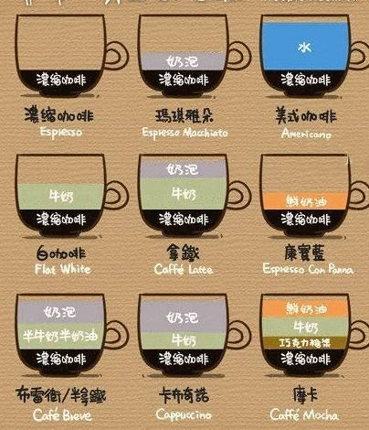

咖啡的简介
“咖啡”一词源自希腊语“Kaweh”，意思是“力量与热情”。咖啡树是属茜草科常绿小乔木，日常饮用的咖啡是用咖啡豆配合各种不同的烹煮器具制作出来的，而咖啡豆就是指咖啡树果实内之果仁，再用适当的烘焙方法烘焙而成。在世界各地，人们越来越爱喝咖啡。随之而来的“咖啡文化”充满生活的每个时刻。无论在家里、还是在办公室、或是各种社交场合，人们都在品着咖啡、它逐渐与时尚、现代生活联系在一起。
咖啡的分类有哪些
咖啡主要是由咖啡豆研磨而成，加入不同比例的糖和奶，也就组成了不同种类的咖啡。

咖啡的品鉴
- 酸味:由有机果酸引起的,如台柠檬酸、苹果酸等
- 苦味:由咖啡因、奎宁和一些生物碱导致的
- 甜味:来自于咖啡特含的蔗糖和果糖成分
喝咖啡的好处
- 咖啡含有一定的营养成分。咖啡的烟碱酸含有维他命B，烘焙后的咖啡豆含量更高。并且有游离脂肪酸、咖啡因、单宁酸等。
- 咖啡对皮肤有益处。咖啡可以促进代谢机能，活络消化器官，对便秘有很大功效。使用咖啡粉洗澡是一种温热疗法，有减肥的作用。
- 咖啡有解酒的功能。酒后喝咖啡，将使由酒精转变而来的乙醛快速氧化，分解成水和二氧化碳而排出体外。
- 咖啡可以消除疲劳。要消除疲劳，必须补充营养、休息与睡眠、促进代谢功能，而咖啡则具有这些功能。
- 一日三杯咖啡可预防胆结石。对于含咖啡因的咖啡，能刺激胆囊收缩，并减少胆汁内容易形成胆结石的胆固醇，最新美国哈佛大学研究人员发现，每天喝两到三杯咖啡的男性，得胆结石的几率低于40%。
- 常喝咖啡可防止放射线伤害。放射线伤害尤其是电器的辐射已成为目前较突出的一种污染。印度笆巴原子研究人员在老鼠实验中得到这一结论，并表示可以应用到人类
- 咖啡的保健医疗功能。咖啡具有抗氧化及护心、强筋骨、利腰膝、开胃促食、消脂消积、利窍除湿、活血化淤、息风止痉等作用。
- .咖啡对情绪的影响力。实验表明，一般人一天吸收300毫克(约3杯煮泡咖啡)的咖啡因，对一个人的机警和情绪会带来良好的影响。
Back To Top